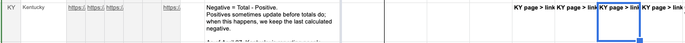
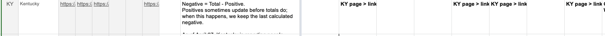
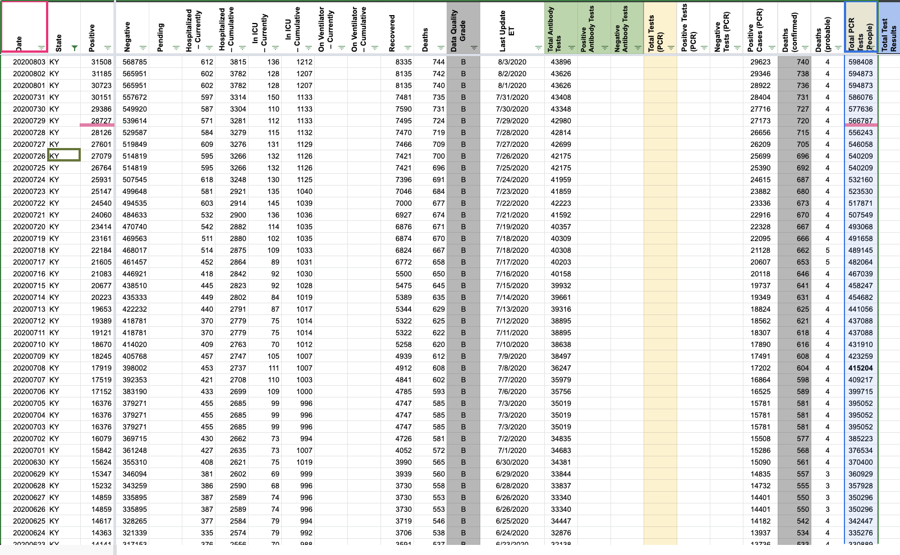
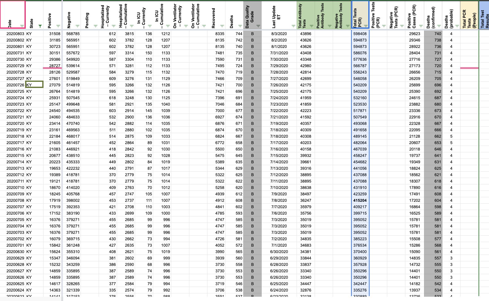

[KY] Inputting PCR Tests (Specimens) in PCR Tests (People)
Issue number 730
the-daniel-lin opened this issue on August 4, 2020 at 8:59 am
State or US: Kentucky
Describe the problem On 8/3, we discovered that we’re currently reporting total PCR tests (specimens) in the Total PCR Tests (People) column. This is reflected in our SVP sheet and in 6/16 and 6/30 outreaches.
We need to:
- Change popup notes
- Copy over the values from
Total PCR Tests (People)intoTotal Tests (PCR)
Link to data source 6/16 Outreach: https://covid-tracking.slack.com/archives/C0124MP2E5C/p1592314451088800 6/30 Outreach: https://covid-tracking.slack.com/archives/C0124MP2E5C/p1593540304173000
KY’s units were confirmed to be in specimens.
Pop-ups were changed Before:  After: 
Values in States Daily were copied over Before:  After: 